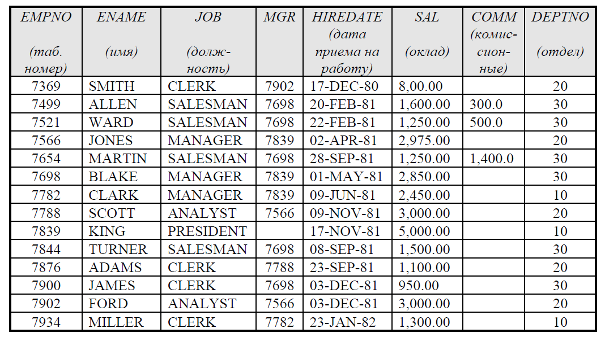
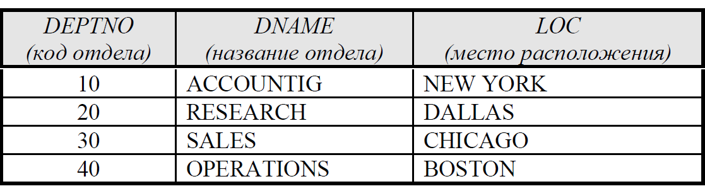

Завдання: Розробити веб-сторінку та переходи
між ними з наступними таблицями:
1. Таблиця співробітників, яка має наступну структуру:
2. Таблиця відділов:
Для кожного відділу розробити веб-сторінку з назвою відділу
та організувати доступ до цих сторінок з таблицями відділов та
доступ до таблиці відділов з заголовку таблиці співробітників.